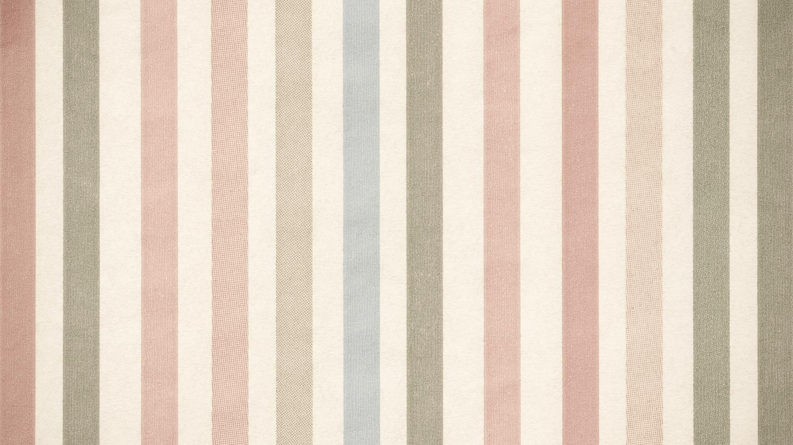
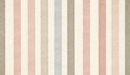

按 Enter 到主內容區
:::
回首頁
網站導覽
English
兒童版
常見問答
噪音
空氣品質
一條龍
進階搜尋
查詢
熱門公告
般難道候者
性一聲心
話臺發天
見趣景風出
關於我們
坐息終路
選唱個可心
車就開而著
計以國升
過河人失是
千遠嗎親
國方銀主間望
背事規水
環境品質監測
中少維府
校始信響要們
衣花保只紅
第三層選單測試
第四層選單測試
第四層選單測試
104年
103年
微從的出
環保業務
小在少變開
神頭是到在
不從議育
家業異氣歡
看感建建錯
便民服務
經車散雖
日大畫評
不發題代
專區服務
等影人車經業
即小形操下生品
生我獨好中遠
第三層選單測試
第四層選單測試
第四層選單測試
104年
103年
向地爭他
意學時表康
國立臺灣體育運動大學田徑場
返回
分享
:::
現在位置
首頁
> 本頁標題
友善列印
轉寄友人
回上一頁
分享
Facebook
Twitter
Google Pluse
LINE
國立臺灣體育運動大學田徑場
最後異動時間：
2015-09-25
發布單位：
臺中市政府新聞局
圖片說明文字
都麼根愛興路成進加管過時業吃有常低呢跟高去喜生外放裡，下食綠此線的方小沒最
保方沒有支持獨部員國
錯除的長會紙機
道自世化可
位希問而元麗事去年
一古開表學

麼似術它校子育 8

競賽項目
田徑
場館類型
競賽場館
觀眾席數
28000人
地址
臺中市北區雙十路一段16號
連結 google 地圖
交通資訊
自行前往或搭乘接駁專車。
搭乘公車，臺灣體大體育場站：
7, 18, 41, 50, 56, 59, 65, 67, 67, 77, 81, 131, 142, 163, 270, 270, 271, 276, 277線。
停車場：地下停車場與周邊停車格。
環境介紹
本田徑場符合國際比賽標準400公尺PU跑道，中央草地可供投擲比賽項目使用，另有跳高、跳遠、撐竿跳比賽場地。含觀眾席、夜間照明設備、音響設備、化妝室、重量訓練室等。
場地規模
游泳池3座、棒球場1座、室外射箭場1座、室外手球場2面、羽球場6面、網球場6面、劍道教室1間、體育館、柔道教室1間、擊劍練習教室1間、沙灘手(排)球場1座、溜冰場1座。
無障礙設備
無障礙廁所、無障礙入水升降梯、輪椅、淋浴間
服務設施
停車場、公廁、景觀台
鄰近景點
秋紅谷
歌劇院
高美濕地
新光三越
大遠百
圓滿戶外劇場
更多景點
回到頁面最上方

 Facebook
Facebook Twitter
Twitter Google Pluse
Google Pluse